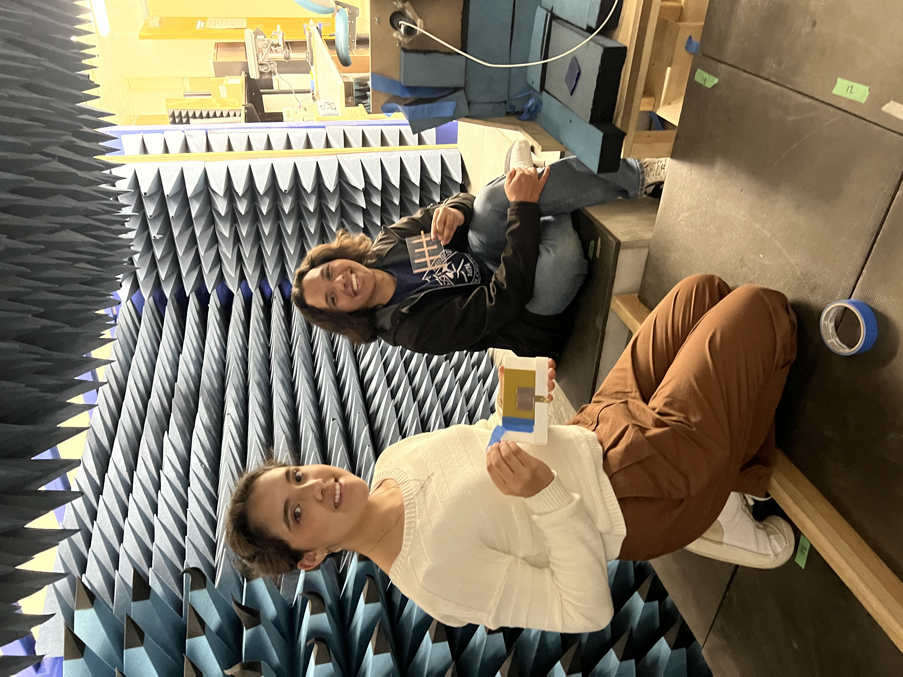

2024 News Archieves
At the ARC Lab, they got to do some hands-on antenna prototyping using copper tape and a Tektronix VNA. Kaino designed a Yagi-Uda antenna operating at 1.5 GHz, and Sophia designed a 3 GHz microstrip patch antenna. Both students got to solder, interpret S-parameters, and iterate through their designs to improve performance. Once their antennas were working well on the VNA, they took them into the anechoic chamber to measure radiation patterns.
The students were able to explore the anechoic chamber and see their antennas' performance in real time. It was wonderful to share the fun of electromagnetics with a couple of incredible students and see their understanding of concepts develop.
Nov 2024 | News
Two high school students, as a part of the LEAD SUMMET program, began their lab shadowing experiences in the ARC LAB. Sophia and Kainoa are part of the inaugural class of high school students invited to shadow in various research labs. As an expansion of SUMMET (Summer Multicultural Engineering Training), these students learn to read papers, use lab equipment, and will present their experiences to next year's SUMMET students. First, they visited Connor Denny in the thin-film deposition lab in Coorstek. Connor is a quantum engineering graduate student doing research on low-noise amplifiers and is involved in research under Dr. Aaen. There, they learned about wire bonding, integrated circuit fabrication, and even got to use the Science Microwave to perform plasma etching on a borosilicate sample.
- Charles Vath and Atef Z. Elsherbeni, "An Interactive Visualization of Electrostatic Electric Field and Potential Distribution"
- Lisa K. Elmiladi, Kenneth Y. Hora, Peter H. Aaen, and Atef Z. Elsherbeni, "Wireless Monitoring of S-Parameters Measurement using a Nano-VNA for Biomedical Applications"
- Kenneth Y. Hora, Trevor J. Wolf, Collin Kringlen, Atef Z. Elsherbeni, Jamal Rostami, "Sensor Data Relay System for Underground Mine Communications"
- Matthew J. Dodd and Atef Z. Elsherbeni, "Simulation of Mutual Coupling in Aperiodic Arrays"
- Nelson L. Angels and Atef Z. Elsherbeni, "Safety of Wireless Brain Implants: A Systematic Review"
- Silje Ostrem, Collin Kringlen, Cameron Evanovich, Atef Elsherbeni, and Peter Aaen, "Towards the Design of a Non-invasive Glucose Monitoring Sensor"
- Nolan H. Grant, Atef Z. Elsherbeni, Quang M Nguyen, and Amir Zaghloul, "Automated Pixelated Unit Cell Design for Reflectarray Antennas and Reconfigurable Intelligent Surfaces"
May 2024 | News
Matthew Dodd, Charles Vath, Nelson Angles, Silje Ostrem, Grace Martienz, Elizabeth Peterson, Kenny Hora, Lisa Elmiladi, Trevor Wolf and Drs. Atef Elsherbeni, Peter Aaen, and Jamal Rostami members of the ARC research group at Mines participated in the Applied Computational Electromagnetics Symposium, held in May 2024 in Orlando. They presented 6 papers (Matthew Dodd, Charles Vath, Nelson Angles, Silje Ostrem, Kenny Hora, Lisa Elmiladi), co-shared four sessions (Charles Vath, Nelson Angles, Silje Ostrem, Elizabeth Peterson) and all managed the conference registration and help desk. Four other members participated in the presented work (Nolan Grant, Cameron Evanovich, Collin Kringlen, Trevor Wolf), but could not attend the conference.

April 2024 | News
One of our amazing combined students, Kenny Hora, presented at the GRADS symposium last month! GRADS stands for the ‘Graduate Research and Discovery Symposium’ hosted by Mines every Spring. This is a great opportunity to present your hard work and innovation to peers, faculty, and industry professionals who provide valuable feedback and collaboration opportunities. Dr. Atef Elsherbeni has been pivotal in helping and guiding these students through their research. Kenny presented with fellow students, Silje Ostrem and Charles Vath, on Sensor Data Relay System for Underground Mine Equipment. A novel system is developed to communicate data from sensor-enabled cutting tools (“smart bits”) on a continuous mining (CM) cutterhead to carry the data to the machine for control and maintenance management purposes. This will allow operators to understand the wear status of the rock cutting tools or bits in addition to the type of rock currently being drilled.
September 2024 | News
Dr. Atef Elsherbeni presented two papers and offered a short course at the combined ICEAA and IEEE APWC conferences during 3th to 6th of September 2024, in Lisbon, Portugal.
- Paper #1 entitled "Pyramidally Shaped Absorbing Boundary for FDTD Simulations" and was coauthored by members of the ARC group: Robert Jones, Joseph Diener, Alec Wess, and Jushua Cast.
- Paper #2 entitled "A Review of Radar Cross-Section evaluation of Canonical and Complex Objects"
- Short course entitled: "Time Domain Simulation of Electromagnetic Problems Combined with Linear and Nonlinear Circuit Elements"
Dr. Elsherbeni was also the chair of the conference awards committee